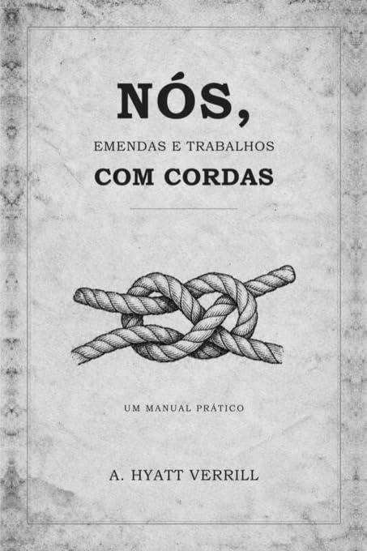
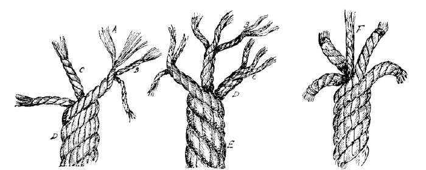
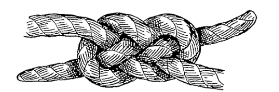
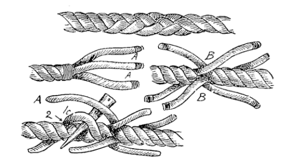
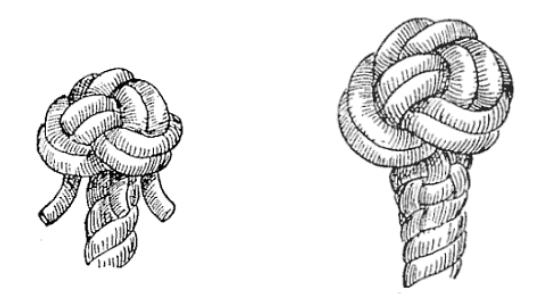

Neste artigo
Como transformar fibras torcidas em uma corda? O que distingue um nó de união de uma emenda? Como se faz um acabamento que também é decorativo? Nós, emendas e trabalhos com cordas, de A. Hyatt Verrill, reúne essas questões em um manual que combina explicações e desenhos. A edição em português é uma novidade para o público brasileiro, com tradução realizada por membros do LASME, da UFSJ.

Uma tradução para o público brasileiro
A proposta desta publicação é aproximar os leitores brasileiros de um saber prático transmitido entre marinheiros, artesãos, pescadores e pessoas acostumadas à vida ao ar livre. O trabalho dos membros do LASME traz esse repertório para a língua portuguesa, preservando o diálogo entre a descrição de cada operação e as ilustrações que mostram o percurso das cordas.
O original se chama Knots, Splices and Rope Work, e a introdução é datada de janeiro de 1917. Mais de um século depois, observar como uma alça se forma ou como os cordões de duas pontas se entrelaçam continua sendo uma maneira interessante de compreender a engenhosidade de soluções manuais. A edição brasileira de 2026 sai pelo selo Barbudânia e credita a tradução e a edição a Artur Avelar.
A tradução também oferece um exemplo de aproximação com o leitor atual: na parte sobre cordoalha, uma nota explica a reexpressão das fórmulas do original no Sistema Internacional de Unidades e registra as hipóteses adotadas na conversão. É um detalhe que permite acompanhar melhor a leitura técnica e reconhecer o contexto histórico dessas estimativas.
O que você encontra no livro
O percurso começa pela própria corda e segue até trabalhos mais elaborados. Os sete capítulos principais abordam:
- Cordoalha: materiais, fibras, fios, cordões e construção das cordas.
- Nós simples e nós de união: partes da corda, falcaças, nós em oito, nós de pescador, de tecelão e de Carrick.
- Amarrações e voltas: diferentes maneiras de prender uma corda e organizar suas voltas em torno de um apoio.
- Laços corrediços e alças: nós de amarração, lais de guia e outras configurações.
- Encurtamentos e anéis de corda: tranças, correntes, catau e estropos.
- Ligaduras e emendas: terminações afiladas, costuras curtas, longas e de olhal.
- Nós decorativos e trabalhos com cordas: pinhas, coroas, cabeças de turco, revestimentos e tranças.
O volume ainda inclui uma seção sobre cabrestos para animais e um índice remissivo, útil para localizar um nó ou uma técnica sem percorrer novamente todos os capítulos.
Um olhar por dentro do manual
As imagens a seguir foram extraídas do PDF da edição em português. Elas mostram como o livro combina a observação do desenho com a leitura das instruções.
Da fibra à corda
No primeiro capítulo, Verrill explica a formação dos fios, dos cordões e da corda. O desenho permite acompanhar os diferentes níveis de torção e visualizar a presença de uma alma central em uma das construções.

“Dois ou mais fios torcidos juntos formam um ‘cordão’”.
A. Hyatt Verrill, capítulo I, p. 7.
O desenho de um nó de união
O capítulo II reúne diferentes formas de unir cordas. Entre elas está o nó de Carrick, apresentado no contexto de cordas grossas ou rígidas. Seu entrelaçamento é um bom exemplo de como a figura ajuda a identificar quais trechos passam por cima e quais passam por baixo.

Emendas feitas com os próprios cordões
Ao tratar das emendas, o livro mostra outra lógica de união: abrir as extremidades e entrelaçar os cordões. Na costura curta, a ilustração apresenta o preparo das pontas e as primeiras passagens. O texto desenvolve a sequência e, depois, compara outras soluções, como a costura longa e a costura de olhal.

“A mais simples de todas as emendas é conhecida como ‘costura curta’”.
A. Hyatt Verrill, capítulo VI, p. 52.
Quando a técnica também se torna acabamento
O último capítulo explora a dimensão decorativa do trabalho com cordas. Pinhas e coroas transformam as extremidades em peças de desenho elaborado. A pinha dupla com coroa, por exemplo, aparece durante a execução e já finalizada: duas vistas que ajudam a relacionar o processo ao resultado.

Para quem é esta leitura
O manual pode interessar a quem gosta de atividades ao ar livre, navegação, escotismo, artesanato ou história das técnicas. Para estudantes e professores de engenharia, há também o prazer de observar como geometria, atrito e habilidade manual se encontram em objetos tão familiares.
É uma leitura que convida a ter um pedaço de corda por perto, acompanhar os desenhos e reconhecer as diferenças entre as construções. Por se tratar de um manual histórico, aplicações que envolvam sustentação de pessoas ou cargas exigem procedimentos atuais, materiais adequados e orientação específica.
Onde encontrar o livro
Conheça a edição em português de Nós, emendas e trabalhos com cordas. Uma oportunidade de descobrir o manual de Verrill e o trabalho de tradução realizado por membros do LASME.
O livro impresso também pode ser encontrado no Clube de Autores.
Fontes: PDF da edição brasileira, especialmente as páginas 2–3, 7–8, 16, 52 e 65; ficha do Clube de Autores; e página do livro na Amazon. Páginas comerciais consultadas em 23 de novembro de 2026.
Dúvidas sobre a publicação ou sugestões de correção? Entre em contato: arturavelar@ufsj.edu.br. · Sobre o autor · Privacidade